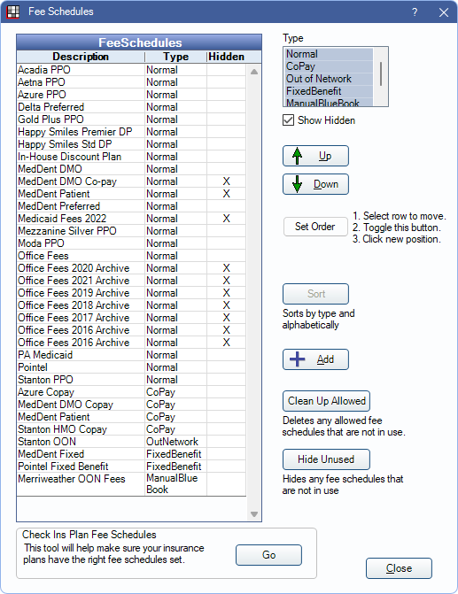

Fee Schedules
Create different Fee Schedules in order to enter different rates for UCR fees, insurance, and more.
In the Main Menu, click Setup, Fee Schedules.
Alternatively:
- In the Chart Module, in the Enter Treatment tab, click Procedure List. Click Fee Scheds.
- In Lists, Procedure Codes, at the bottom right, click Fee Scheds.
Typically, the office creates a Fee Schedule for Usual, Customary, and Reasonable (UCR) fees and for each insurance company they are contracted with. A Fee Schedule can allow a single (global) fee per procedure, or allow provider and/or clinic-specific fees. Users must have the Edit Fee Schedule Permission to access the Fee Schedule window.
- See Fee Schedule Logic for an explanation of how a patient's Fee Schedule is determined
- See Procedure Codes for information on entering fees and editing procedure codes.
- See Fee Tools for information on copying Fee Schedules and editing fees.
- See Procedure Codes - Fee Schedules Report to print a Fee Schedule.
- See Provider to assign the default Fee Schedule to the provider. Each provider can have their own default Fee Schedule if needed.
Filter or edit the Fee Schedule list:
- Type: Filter the list by fee schedule type.
- Show Hidden: Check to show Fee Schedules marked as hidden.
- Up/Down: Reorder the Fee Schedules. Select a Fee Schedule, then click Up or Down to move it.
- Set Order: Quickly move a Fee Schedule. Highlight a Fee Schedule, click Set Order, then select the spot in the list to move the Fee Schedule.
- Sort: Quickly sort the Fee Schedule list alphabetically by type. All Fee Schedule types must be selected to use.
- Add: Create a new Fee Schedule. Opens the Edit Fee Schedule window below.
- Clean Up Allowed: This button is only visible to users with the "Security Admin" Permission. Use it to delete out-of-network Fee Schedules that are not being used or are attached to hidden insurance plans.
- Hide Unused: This button is only visible to users with the Security Admin Permission. Hide Fee Schedules are that not in use. See below for details.
- Go (Check Ins Plan Fee Schedules): This tool allows a user to check that insurance plans have the correct Fee Schedules attached or reassign Fee Schedules for multiple insurance plans at once. See Check Ins Plan Fees.
Fee Schedule Edit
Click Add to create a new Fee Schedule or double-click an existing Fee Schedule to edit.

- Description: Enter the name of the Fee Schedule.
- Type: Select the Fee Schedule type. See Insurance Plan Types for more examples of when to use each type.
- Normal: In network Fee Schedules. These types of fees schedules are options in the Fee Schedule dropdown on the Insurance Plan.
- CoPay: A set Fee Schedule the patient is responsible for per procedure. Copay Fee Schedules can work in conjunction with percentage-based plans. To determine how blank entries in a copay Fee Schedule are treated, see Copay fee schedules treat blank entries as zero in Preferences.
- Out of Network: A Fee Schedule for fees allowed by insurance, even if the office is not contractually obliged to follow them. These types of Fee Schedules are options for Carrier Allowed Amounts on the Edit Insurance Plan window. When computing estimates, all percentages are based on this out-of-network amount instead of on the procedure fee. Blank amounts are ignored and do not change the estimates. But out of network amounts of zero result in an estimate of zero. Out-of-network Fee Schedule entry can be automated using the Blue Book feature.
- FixedBenefit: A Fee Schedule from insurance where they pay a fixed amount for each procedure code. This Fee Schedule is an option for PPO Fixed Benefit Insurance Plan only. To determine how blank entries in a fixed benefit Fee Schedule are treated, see Fixed benefit fee schedules treat blank entries as zero in Preferences.
- ManualBlueBook: Use when Blue Book is enabled. These are the known allowed amounts for an out-of-network insurance plan. See Insurance Blue Book Setup.
- Hidden: Hide the Fee Schedule. Users are prompted if attempting to hide a Fee Schedule that is in use. Insurance plans that have a hidden Fee Schedule attached act as though no Fee Schedule is attached instead.
- Use Global Fees: Set whether the Fee Schedule only allows a single (global) fee per procedure, or allow Fee Override for Provider or Clinic.
- Checked: Only allow a single fee per procedure.
- Unchecked: Allow provider and/or clinic specific fees per procedure. This box can only be changed when the logged-on user has the Provider Fee Edit permission and, if Clinics is turned on, Headquarters is selected in the main menu.
Hide Unused
This tool allows users to mark any unused Fee Schedules as hidden.
Before running the tool, the user is alerted that a backup of the database will be made. This may take a while.
Click OK. Any Fee Schedules not used by insurance plans, patients, providers, or discount plans are hidden.